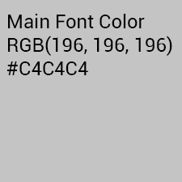

Visual Elements
Color palettes
This grey color is the portfolio's main font color. It is used in content text areas in order to provide comfortable reading for the reader. A comfortable font color is absolutely necessary as comfortable colors allow the user to keep reading without difficulty.
This teal color is the portfolio's link color. This color is used when the link is inactive and changes to the color (#00CDCD) when hovered or active. This color complements the dark background color but is bright enough to stand out and entice the user to click on the links.

This dark color is the portfolio's backgrund color. This color works in both bright and dim areas, which provides some comfort to the reader's eyes. As a programmer that spends most of his time in front of a monitor, it is crucial to protect the eyes whenever possible, therefore a dark theme is used throughout the website.
Fonts
Palaquin Dark is the portfolio's heading font.
Palaquin Dark is a blocky sans-serif font that helps emphasize the headings.
Noto Sans is the portfolio's content font
Noto Sans is a sans-serif font that features thin lettering that helps the content flow well. It is especially important to choose a readable font for the content as the content is the most important part for the reader to look at.